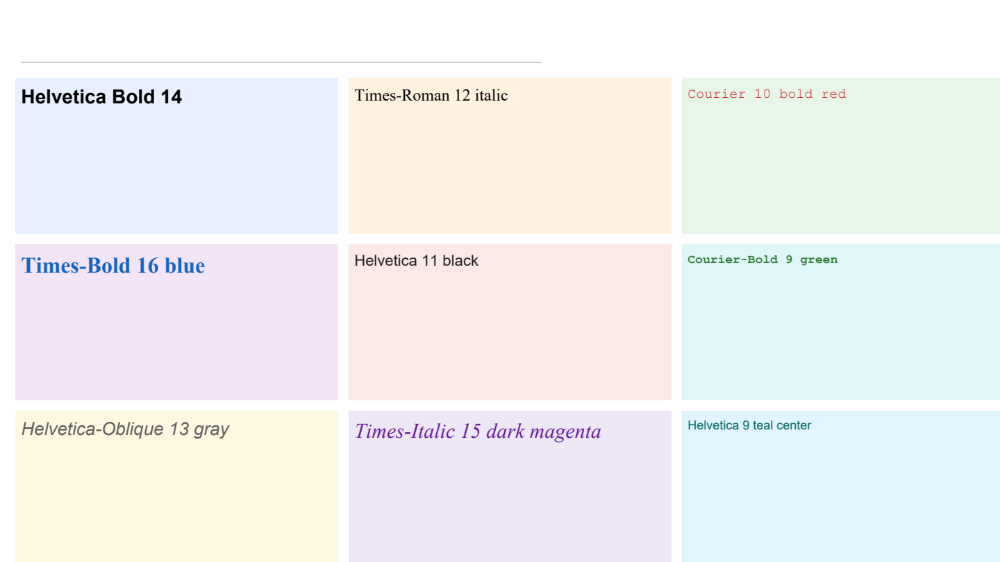
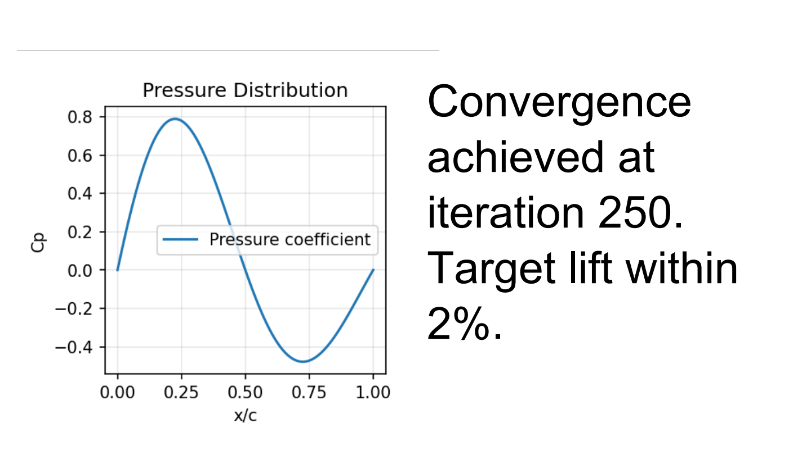
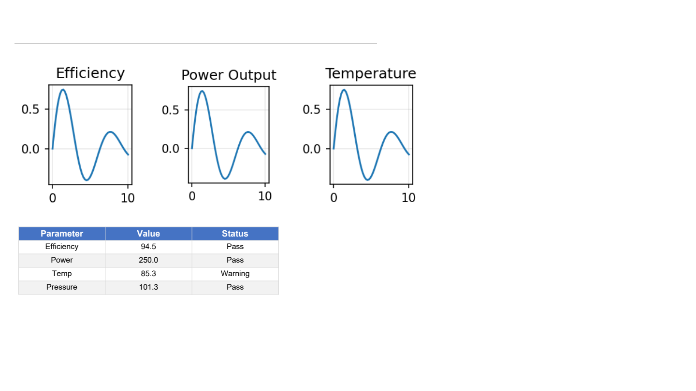
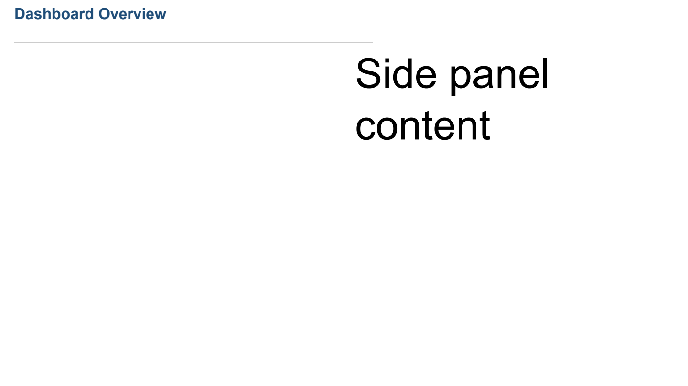

Elements Reference
All content types inherit from BaseElement and are backend-agnostic —
they do not know which renderer produces the final output.
TextElement
A rich-text block made of one or more TextBlocks, each containing
one or more TextRuns.
slide[0, 0].text("Hello") # simple text
slide[0, 1].text("Bold red", bold=True, # formatted in one call
color="#C62828", size=14)
slide[1, 0].text("Times-Roman title", # custom font
font_name="Times-Roman",
size=16, italic=True)
Keyword arguments (all extracted from **kwargs):
boldbool— applies bold face (defaultFalse)italicbool— applies italic (defaultFalse)colorstr— hex color like"#C62828"(defaultNone)sizefloat— font size in points (defaultNone, renderer picks)font_namestr— PostScript font name, e.g."Times-Roman","Courier-Bold","Helvetica-Oblique"(defaultNone→ renderer default)alignmentstrorTextAlignment—"left","center","right","justify"(default"left")
Multi-run text:
el = slide[0, 0].text("Base text", size=12)
el.add_run(" bold part", bold=True)
el.add_run(" red part", color="#C62828")
el.add_block(alignment="center")
el.add_run("Centered line", font_name="Times-Roman", size=14)
{kind=link}

FigureElement
Wraps a matplotlib.figure.Figure.
import matplotlib.pyplot as plt
import numpy as np
fig, ax = plt.subplots()
ax.plot(np.linspace(0, 10, 50), np.sin(np.linspace(0, 10, 50)))
slide[0, 0].plot(fig) # default dpi=150, bbox="tight"
slide[0, 1].plot(fig, dpi=200) # higher resolution
slide[0, 2].plot(fig, format="jpg") # JPEG output
Keyword arguments:
dpiint— resolution (default150)bbox_inchesstrorNone— bounding box (default"tight")formatstr— image format (default"png")
{kind=link}

TableElement
Wraps a pandas.DataFrame.
import pandas as pd
df = pd.DataFrame({
"Parameter": ["A", "B", "C"],
"Value": [1.0, 2.5, 3.2],
"Status": ["Pass", "Pass", "Fail"],
})
slide[0, :].table(df) # basic table
slide[1, :].table(df, zebra=True) # alternating row colors
slide[2, 0].table(df, include_index=True) # show index column
Keyword arguments:
zebrabool— alternating row colors (defaultFalse)include_indexbool— reset index as first column (defaultFalse)headerbool— show header row (defaultTrue)numeric_formatstr— format string for numbers, e.g."{:.2f}"column_widthslist[float]— explicit column widths in px
Conditional formatting:
slide[0, :].table(df).highlight_max("Value")
slide[1, :].table(df).heatmap("Value", color_map="Blues")
slide[2, :].table(df).highlight_min("Status")
{kind=link}

ImageElement
References an external image file.
slide[0, 0].image("chart.png")
slide[0, 0].image("diagram.svg", scale=0.8)
Keyword arguments:
alt_textstr— alternate text (default"")scalefloat— scale factor (default1.0)rotationfloat— rotation degrees (default0.0)opacityfloat— opacity 0–1 (default1.0)widthfloat— explicit width in px (defaultNone)heightfloat— explicit height in px (defaultNone)
ContainerElement
Nests a Grid inside a single cell. Useful for complex sub-layouts.
from reporting.layout.grid import Grid
from reporting.layout.sizing import Fill
from reporting.elements.container import ContainerElement
from reporting.elements.text import TextElement
inner = Grid(rows=2, cols=1, row_sizes=[Fill, Fill], gap=5)
inner[0, 0].panel.background_color = "#E8F0FE"
inner[0, 0].element = TextElement("Top", bold=True, size=12)
inner[1, 0].panel.background_color = "#FFF3E0"
inner[1, 0].element = TextElement("Bottom", size=10)
container = ContainerElement(grid=inner)
slide._set_cell_element(slide._grid[0, 0], container)
{kind=link}

SpacerElement
Occupies empty space in a layout. Typically unused — empty cells render as blank space automatically.
from reporting.elements.spacer import SpacerElement
slide._grid.cells[0][1].element = SpacerElement(width=50, height=20)